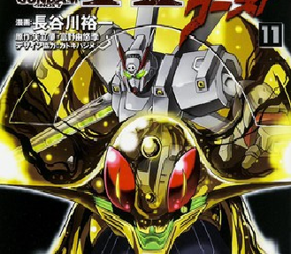

Gundam the Origin MSD: Cucuruz Doan no Shima Manga Launches in May
The June issue of Kadokawa's Gundam Ace magazine announced on Tuesday that it will begin serializing a spinoff manga of Yoshikazu Yasuhiko's Mobile Suit Gundam...
Gundam UC Anime Gets TV Broadcast With New Opening, Ending Themes
Hiroyuki Sawano produces new themes for series premiering on April 3...

Shin Crossbone Gundam Dust Manga Series to Launch in July
The June issue of Kadokawa's Gundam Ace magazine revealed on Tuesday that Yuichi Hasegawa will launch Shin Crossbone Gundam Dust, a new sequel to...
Gundam Thunderbolt Blu-ray Has English Dub, Subtitles
Right Stuf to offer import of limited edition ― Online retailer Right Stuf announced on Thursday that it will release an import of the Japanese limited edition Blu-ray Disc...